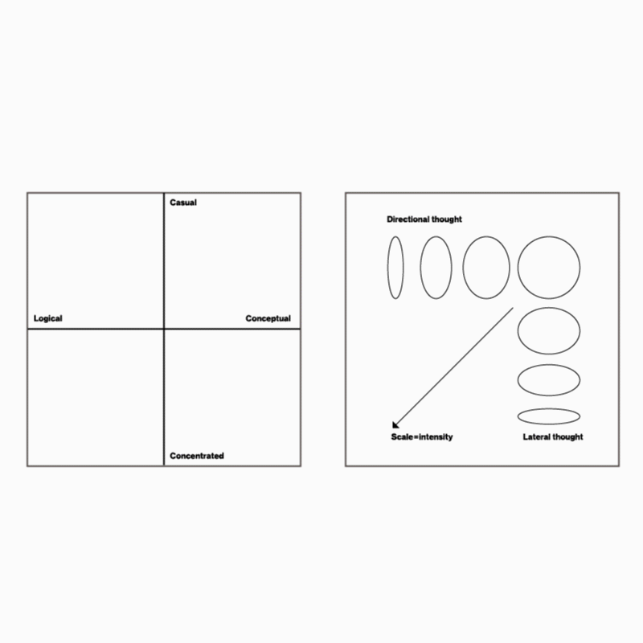
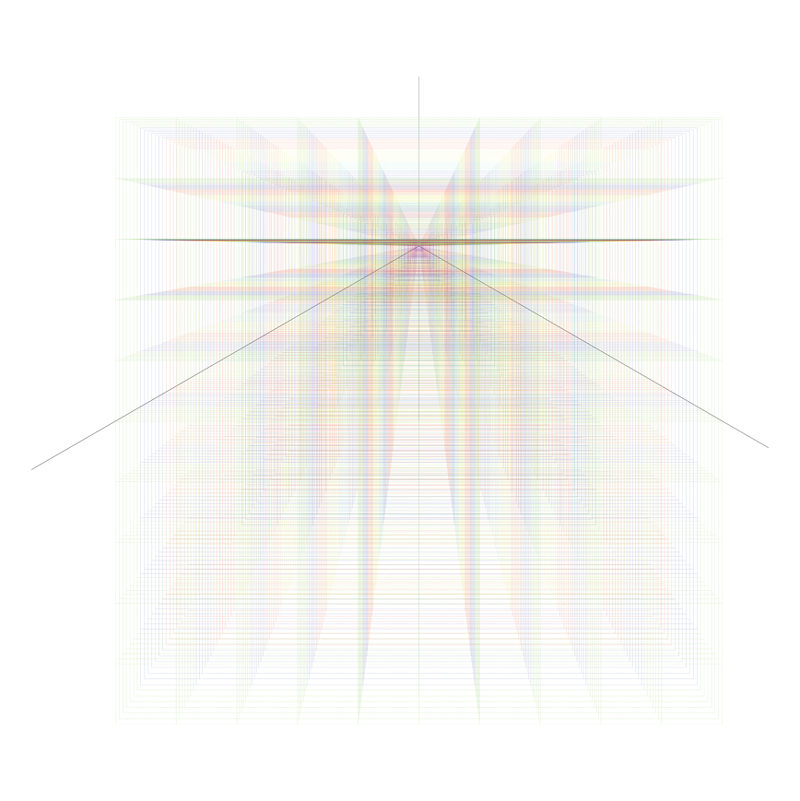
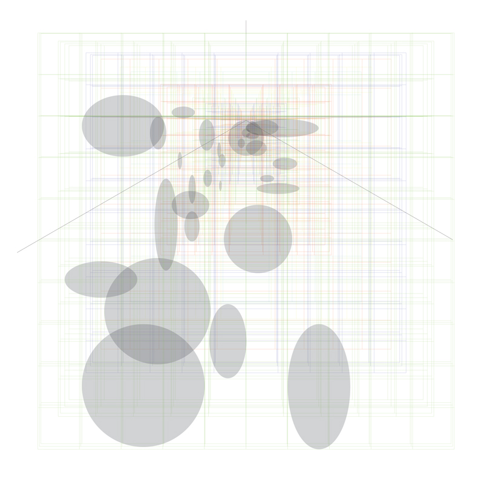

This is a record of my creative thinking during one project over 12 weeks. A framework was developed to collect different types of thought. Findings from this introspection is extremely valuable, allowing me to be self-aware during the creative process.

29 key data points were collected over a 98 day period.
Thoughts were logged and plotted on a Casual/Concentrated and Logical/Conceptual matrix. The thoughts are visualised as ellipses. The shape of each ellipse is determined by the level of which that thought was directional or lateral. The scale of each ellipse indicates the intensity of that thought.

The initial 3D grid framework.

Populated 3D grid with no-data daily grids removed.
To develop creative thought there needs to be balance between conceptual and logical thought, and concentrated and casual thinking efforts. Think hard and chase a thought. Let it breathe and let your subconcious and semi-concious mind open it up and explore. Repeat.